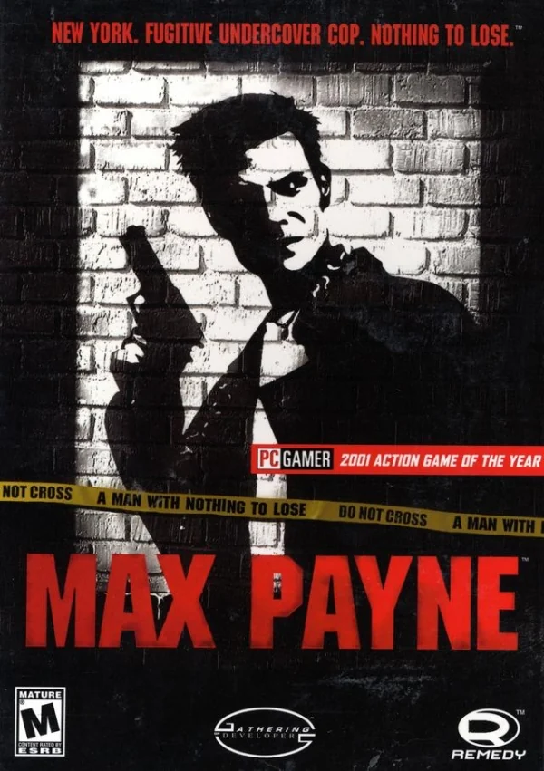
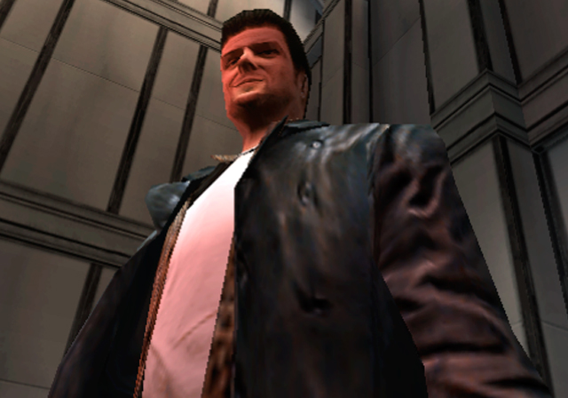
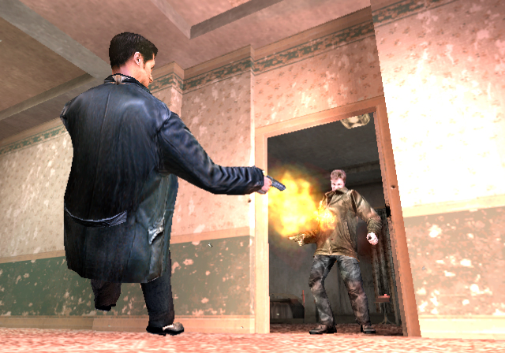
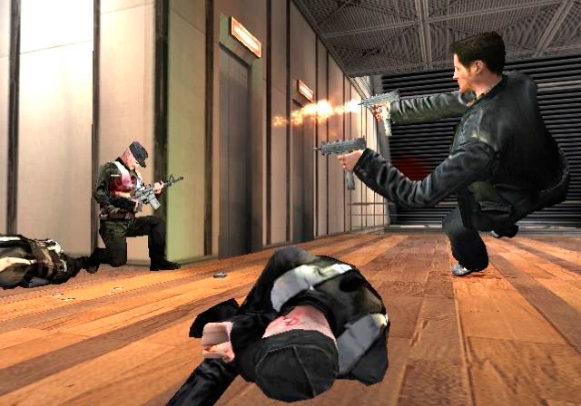
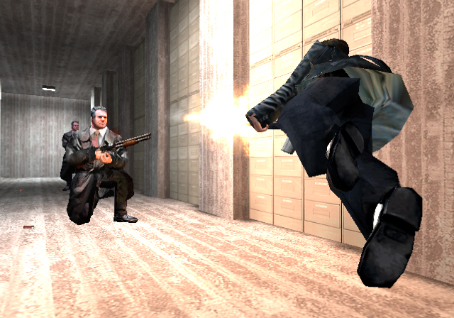

Max Payne

Descripción
Max Payne es un policía de paisano que acaba convirtiéndose en un fugitivo tras ser acusado falsamente de asesinato. Perseguido tanto por la policía como por la mafia, tendrá que abrirse paso por las frías y violentas calles de Nueva York, donde parece que no tiene ninguna posibilidad de salir con vida.
Una historia oscura, llena de acción, violencia y venganza.
Capturas del videojuego




Información del videojuego
| Desarrollador | Plataforma | Fecha de lanzamiento |
|---|---|---|
| Remedy Entertainment | PS4, PC, iOS, PS2, Android, Xbox, Kindle, Game Boy Advance | 25 de julio de 2001 |
Mi opinión personal
A ver... hablemos del caso Max Payne. La verdad es que es un juego que no llegué a terminar debido a lo injugable que se me hizo, así que acabé viendo un resumen para conocer cómo terminaba la historia.
En cuanto a la trama, la verdad es que está bastante guapa. Nos cuenta la historia de un policía cuya mujer y cuya hija son asesinadas por unos criminales. Más adelante, Max acaba siendo acusado injustamente del asesinato de un compañero de policía, por lo que se convierte en un fugitivo perseguido tanto por las autoridades como por la mafia. A partir de ahí, buscará venganza y tratará de limpiar su nombre.
En cuanto a la jugabilidad, hay dos aspectos que quiero destacar. El primero es la cámara lenta, una mecánica que permite ralentizar el tiempo durante los tiroteos. Me parece una idea bastante buena y seguramente estuvo influenciada por la popularidad de Matrix en aquella época. Sin embargo, aunque sobre el papel suena genial, a la hora de jugar no me resultó demasiado práctica.
El segundo aspecto es la dificultad. Es un juego MUY complicado y, sinceramente, no recuerdo si era por los FPS, los bugs o simplemente porque se me daba fatal, pero no disfruté demasiado de la experiencia. Eso sí, la cámara lenta no será la última vez que la veamos en un videojuego de Rockstar, ya que más adelante veremos cómo la van perfeccionando con el paso de los años.
Por otro lado, la historia tiene unos giros argumentales bastante épicos y unas animaciones que, para su época, estaban muy bien. Esto último es algo importante porque demuestra el interés por contar historias cada vez más elaboradas.
En definitiva, aunque me haya quejado bastante de su jugabilidad, Max Payne consigue compensarlo con una historia que merece mucho la pena.